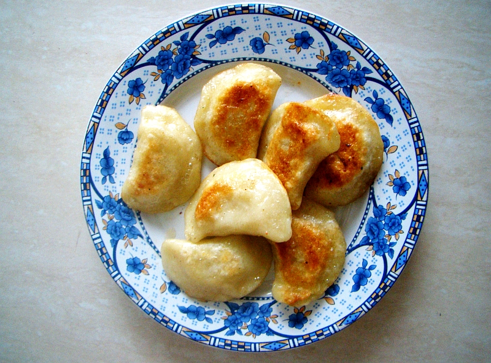

Pierogi Dough

Description
Pierogi are a type of dumpling from Poland.
They are made by wrapping unleavened dough (dough without yeast) around a
savoury or sweet filling and cooking in boiling water and are often then pan-fried before serving.
Pierogi are usually filled with either potato, quark, sauerkraut, ground meat, mushrooms, or fruit
Ingredients
- 500g wheat flour
- 1/2tsp salt
- 50ml oil
- 250ml hot water
Steps
- Add all dough ingredients to a large bowl
- Combine then knead the ingredients together until the dough is soft and elastic
- Gently shape the dough into a ball and put it back in the bowl.
- Cover the bowl with a rag
- Let rest for 30 minutes. (This will prevent the dough from shrinking when rolled out)
- Once rested, divide the dough into 3 parts
- Take 1 part and roll it out
- Use a glass rim to cut circles out of the dough
- Put 1tsp of your filling of choice into each circle
- Wrap the dough around the filling and use your index finger and thumb or a fork to stamp the
edge, closing the pierog
Home